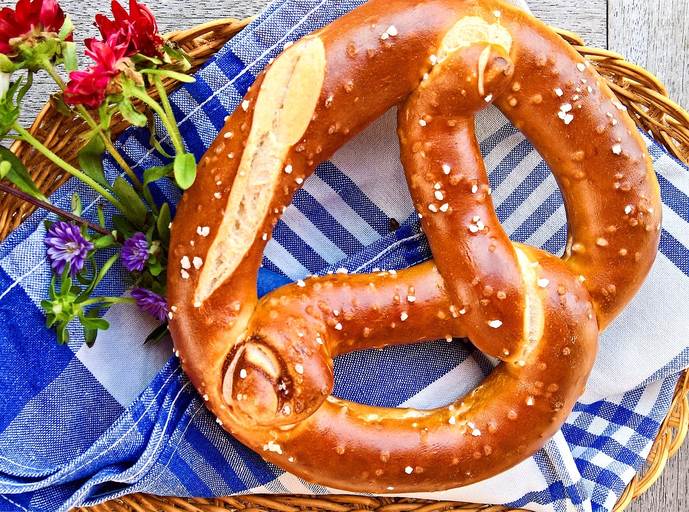

- Ocean Mist Latte
- Tidal Wave Mocha
- Sunset Caramel Macchiato
- Coastal Cold Brew
- Seaside Cortado
- Tropical Breeze Smoothie
- Island Iced Tea
- Beachside Chai
- Sea Salted Caramel Brew
- Cool Wave Matcha Latte
- Seaside Scones
- Beach Bum Cookies
- Sailor's Pretzels
- Wave-Washed Bagels
- Sun-Kissed Iced Coffee
- Seashell Latte
- Margarita Mocha
- Pirate's Punch
- Sunset Espresso
- Breeze Chaser
Breezy Brews
A velvety espresso blend topped with steamed milk and a hint of vanilla, finished with a light sprinkle of cinnamon. Perfect for a refreshing pick-me-up.
Rich espresso combined with smooth chocolate and steamed milk, finished with a dollop of whipped cream and a drizzle of chocolate syrup. A sweet wave of indulgence!
Layers of creamy vanilla syrup, espresso, and steamed milk, crowned with a drizzle of caramel sauce. This drink is as warm and inviting as a sunset at the beach.
Bold and smooth cold brew coffee served over ice with your choice of cream or milk. It’s the perfect chill companion for those long beach days.
Equal parts espresso and warm, frothy milk create a balanced and bold drink that’s perfect for savoring the simplicity of great coffee.

Shoreline Sips
A blend of pineapple, mango, and banana with a splash of coconut milk. It’s like a vacation in a glass!
Refreshing black tea with a hint of lemon, lightly sweetened and served over ice. Add a splash of peach or raspberry syrup for a fruity twist.
Spiced chai tea blended with steamed milk and a touch of honey. This warm, aromatic drink will transport you to a cozy beach bonfire.
Espresso mixed with steamed milk, a swirl of salted caramel syrup, and a dash of sea salt. It’s a sweet and savory treat that’s both indulgent and delightful.
Matcha green tea whisked with steamed milk and a touch of honey, served either hot or iced. A refreshing and invigorating choice for matcha lovers.

Salty Snacks
Flaky and buttery scones served with your choice of strawberry jam or clotted cream. Perfect with any of our coffee or tea offerings.
Freshly baked cookies with chunks of chocolate, nuts, and a sprinkle of sea salt. A sweet, satisfying bite with every crunch.
Soft, warm pretzels served with a side of honey mustard or cheddar cheese dip. Ideal for munching while you enjoy your coffee.
Toasted bagels with cream cheese, or topped with your choice of smoked salmon, capers, and red onions. A classic choice for a seaside breakfast.
Summer Specials
Classic iced coffee with a splash of vanilla or caramel syrup, served with a lemon wedge for a zesty kick.
A delicate blend of rosewater and espresso, topped with steamed milk and a sprinkle of edible rose petals. A floral and elegant treat.
A playful twist on the traditional mocha, with a hint of lime and a touch of sea salt. Sweet, tangy, and just a little bit salty
A fruity, non-caffeinated punch with a blend of orange, pineapple, and cranberry juices. Garnished with a slice of lime and a cherry.
Wave Goodbye
A shot of our rich espresso with a hint of orange zest and a touch of brown sugar. A perfect way to end your visit on a high note.
A light, sparkling coffee soda infused with a hint of vanilla and a splash of citrus. Effervescent and unique, just like a day at the shore.